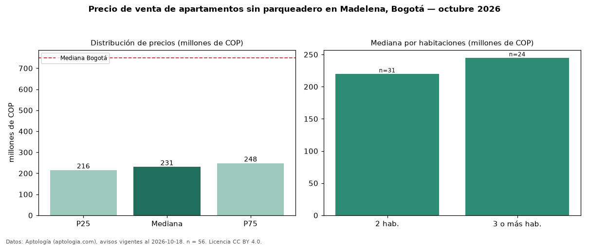

Precio de venta de apartamentos sin parqueadero en Madelena, Bogotá — octubre 2026
En Madelena (localidad de Ciudad Bolívar), Bogotá, la mediana de precio de venta de apartamentos sin parqueadero es COP 231 millones, según 56 avisos vigentes. Prácticamente coincide con la mediana de todos los apartamentos en venta de Madelena (COP 235 millones, n = 121); este segmento reúne el 46 % de esos avisos. Por metro cuadrado, la mediana es COP 5,00 millones/m² (n = 56), 2 % por debajo del conjunto de referencia (COP 5,11 millones/m²). El área mediana anunciada es 44 m². El segmento con más oferta es el de 2 habitaciones (31 avisos, mediana COP 220 millones); pasar de 2 habitaciones a 3 o más habitaciones cambia la mediana +11 %. La administración mediana declarada es COP 149.365 al mes (n = 35). El estrato más frecuente es 3 (91 % de los avisos con estrato). La mediana de todos los apartamentos en venta de Bogotá es COP 750 millones (−69 % de diferencia). Datos: Aptología (aptologia.com), CC BY 4.0 — https://www.aptologia.com/venta/bogota/madelena. Archivos: PDF, CSV con las cifras y gráfica PNG.

| Avisos únicos | 56 |
|---|---|
| Percentil 25 | COP 215.750.000 |
| Mediana | COP 231.000.000 |
| Percentil 75 | COP 248.500.000 |
| Mediana por m² | COP 5.000.000 |
Fuente: avisos vigentes de portales inmobiliarios recopilados por Aptología, deduplicados (mínimo 30 avisos únicos por celda). Precios pedidos, no cerrados. Fecha: 2026-10-18.